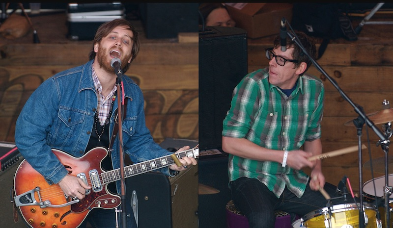

The Black Keys
Матеріал з Вікіпедії — вільної енциклопедії.
The Black Keys — американський блюз-рок дует, сформований в місті Акрон штату Огайо у 2001 році. До складу гурту входять Ден Ауербах і Патрік Карні.
Історія
The Big Come Up (2001—2002)
Гурт випустив свій дебютний альбом The Big Come Up в 2002 році. Альбом був дуже успішним. Він був повністю записаний у підвалі будинку одного з учасників. Синглами цього альбому стали пісні «Leavin' Trunk» та «She Said, She Said», яка в оригіналі виконувалась групою The Beatles. «I'll Be Your Man» була використана як тема до серіалу Hung, а «Breaks» було включено до треклисту фільму Рок-н-рольник.
Thickfreakness (2003)
Другий альбом під назвою Thickfreakness було випущено в квітні 2003. Цей альбом було записано за 14 годин. Сингли альбому: «Set You Free», «Hard Row», «Have Love, Will Travel». Пісня «Set You Free» стала саундтреком до фільмів Школа року та Люблю тебе, чувак.
Rubber Factory (2004)
Rubber Factory - третій альбом, випущений у 2004 році. Саме в цей час гурт набирає популярності. Цей альбом було записано на закинутому заводі, який знаходився у Акроні. У 2005 році група також випустила свій перший відео альбом Live, записаний у The Metro Theatre в Сіднеї, Австралія.
Magic Potion (2006)
The Black Keys записали Chulahoma: The Songs of Junior Kimbrough, диск каверів на пісні Junior Kimbrough. Першим релізом у Nonesuch Records став четвертий альбом групи Magic Potion. Синглами альбому стали «You're the One», «Your Touch» та «Just Got To Be».
Attack & Release (2008)
П'ятий альбом The Black Keys Attack & Release вийшов у світ 1 квітня 2008 року. Сингли альбому: «Strange Times», «I Got Mine» та Same Old Thing". «I Got Mine» було включено у список ста найкращих пісень 2008 журналу Rolling Stone. У листопаді 2008 був випущений ще один відео альбом Live at the Crystal Ballroom. Його було записано у квітні цього ж року у Портленді штату Орегон.
Brothers (2010)
Brothers вийшов у світ 18 травня 2010 року. Альбом розійшовся тиражем 73 000 копій у перший тиждень продажу.
El Camino (2011)
El Camino став сьомим студійним альбомом дуету The Black Keys, виданий 6 грудня 2011-го року на лейблі Nonesuch Records. Синглами стали «Lonely Boy», «Gold on the Ceiling» та «Dead and Gone».
Turn Blue (2014)
Turn Blue восьмий альбом гурту, що вийшов 12 травня 2014-го року на лейблі Nonesuch Records.Цей альбом був записаний у пінк-флойдівському психоделічному стилі, а тексти були надихнуті тим, що вокаліст Ден Ауербах розлучився з Стефані Ґоріс. Альбом очолив націолальні хіт-паради США, Канади й Австралії. Головні сингли альбому: «Fever», «Turn Blue», «Bullet in the Brain», «Gotta Get Away» та «Weight Of Love». Були також відзняті відеокліпи на пісні «Fever» і «Weight Of Love».
Let's Rock (2019)
Let's Rock дев'ятий альбом гурту, що вийшов 28 липня 2019-го року на Easy Eye Sound / Nonesuch Records.
Delta Kream (2021)
Delta Kream — десятий альбом американського рок-дуету Black Keys , випущений Easy Eye Sound і Nonesuch Records 14 травня 2021 року. Це кавер-альбом пісень hill country blues. альбому передував 15 квітня випуск кавер-версії «Crawling Kingsnake», заснованої на виконанні Джуніора Кімбро.
Склад
- Ден Ауербах — головний вокал, електрична гітара
- Патрік Карні — ударні
Дискографія
Студійні альбоми
- 2001 — The Big Come Up
- 2003 — Thickfreakness
- 2004 — Rubber Factory
- 2006 — Magic Potion
- 2008 — Attack & Release
- 2010 — Brothers
- 2011 — El Camino
- 2014 — Turn Blue
- 2019 — Let's Rock
- 2021 — Delta Kream
- 2022 — Dropout Boogie
Міні-альбоми
- 2004 — The Moan EP
- 2006 — Chulahoma EP